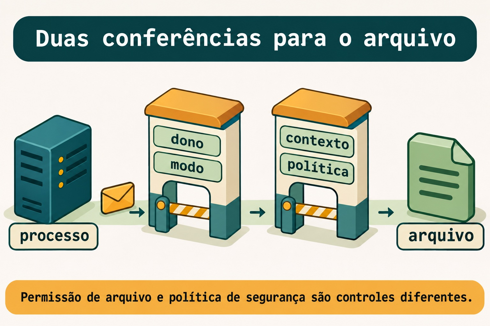

Aula 12.3 · SELinux: modos e contextos
No Windows Server, permissões do arquivo e regras de execução não são a mesma camada. No Linux, dono e modo também não explicam toda negativa. Você vai observar o domínio de um serviço e o tipo de um arquivo, corrigir o contexto na origem e conferir o resultado sem desligar a proteção.
Núcleo desta aula: na Rocky com SELinux enforcing, dono e modo corretos ainda precisam combinar com a política.
semanage fcontextregistra a regra;restoreconaplica o contexto. O resto é aprofundamento.
| Ficha | |
|---|---|
| Módulo | M12 · Segurança do host, aula 3 de 5 |
| Quando | Semana 18 |
| Ao final | Você separa DAC e SELinux, identifica domínio e tipo e corrige um contexto persistente |
| Pré-requisitos | Aulas 12.1 e 12.2; student, sudo, SSH e noVNC; porta TCP 80 livre nas duas VMs |
| Tempo | Cerca de 90 minutos |
| Snapshots | m12a3-inicio e m12a3-fim nas VMs 201 e 202 |
1 · Aquecimento
Responda antes de consultar. O gabarito está no fim.
- Porta permitida no firewall comprova que existe um processo em escuta?
- Por que um diretório precisa de permissão de travessia para alcançar um arquivo dentro dele?
- Depois de mudar uma configuração, por que testar uma nova conexão antes de fechar a sessão antiga?
2 · Por que importa
Uma página funciona no diretório padrão. Você coloca o mesmo conteúdo em uma árvore nova, confere leitura e travessia, mas o servidor devolve uma negativa. Trocar o modo para permitir tudo esconde o raciocínio e não corrige a política que faltou.
Você precisa distinguir “o usuário do serviço consegue ler” de “o domínio do serviço está autorizado a ler”. Essa diferença evita uma mudança perigosa para resolver um arquivo mal rotulado.
| Pergunta | Evidência |
|---|---|
| Quem é dono e quais são os modos? | ls -l e namei -l |
| Qual é o contexto do arquivo? | ls -Z |
| Em qual domínio o serviço roda? | ps -eZ |
| Qual contexto a regra do caminho prevê? | matchpathcon |
3 · Modelo mental
Na portaria do prédio, o crachá do processo e a etiqueta da sala têm funções diferentes. A política decide se aquele crachá pode fazer aquela operação na sala. O modo do arquivo continua existindo: passar uma conferência não substitui a outra.
processo -> dono e modo -> política SELinux -> arquivo
| | |
httpd_t operação pedida httpd_sys_content_tO desenho é um modelo didático de controles que se combinam, não uma ordem universal de todas as verificações do kernel.


Ponte Windows
| Referência do Windows | O que comparar no Linux |
|---|---|
| Identidade que executa um serviço | Usuário do processo e, na Rocky, domínio SELinux |
| Permissões do objeto | Dono, grupo, modo e ACL |
| Política adicional de proteção | Controle MAC, com mecanismos diferentes entre distros |
| Conferir a configuração efetiva | Comparar contexto atual e regra esperada |
4 · O essencial
Modos são estados da proteção
Em Enforcing, SELinux aplica as decisões da política. Em Permissive, registra negativas que seriam aplicadas, mas não as impõe. Em Disabled, esse mecanismo não está ativo. Nesta aula, a Rocky permanece em Enforcing o tempo todo.
getenforce
sestatusLeia o estado atual e o configurado para o próximo boot. Não use uma mudança de modo como conserto para conteúdo rotulado incorretamente.
O tipo importa nesta aula
Um contexto SELinux tem campos separados por dois-pontos. Nesta aula, foque o tipo do arquivo e o domínio do processo. Para conteúdo web estático, a regra de exercício usa httpd_sys_content_t; o nginx iniciado pelo serviço deve aparecer em httpd_t na Rocky.

Atual e esperado não são a mesma coisa
ls -Z mostra o contexto aplicado. matchpathcon consulta o contexto previsto pelas regras do caminho. semanage fcontext mantém uma regra local persistente; restorecon aplica essas regras aos arquivos existentes.
Uma mudança com chcon altera o rótulo atual, sem registrar a regra do caminho. Vamos usá-la apenas para plantar uma falha controlada em um arquivo de exercício.

Rocky × Debian
| Item | Rocky 9 | Debian 13 |
|---|---|---|
| Controle de arquivo comum | Dono, modo e ACL | Dono, modo e ACL |
| MAC deste lab | SELinux enforcing | Inspeção do AppArmor instalado |
| Ferramenta de contexto | semanage, restorecon, ls -Z | Não executar os passos SELinux |
| Usuário web do pacote | nginx | www-data |
| Servidor de exercício | Unidade própria, nginx em loopback | A mesma unidade, nginx em loopback |
AppArmor ativo não significa que todos os programas estejam confinados. Na Debian você compara DAC e observa os perfis reais; a criação de um perfil fica na 12.4.
5 · Lab guiado
Faça o lab nas duas VMs. Execute os blocos marcados Rocky somente na 201. O nginx do exercício usa configuração e unidade próprias; não substitui a configuração do pacote. Não prossiga se já houver nginx ativo ou serviço na porta 80.
Passo 1 · Proteger e conferir
Palpite: o fato de haver nginx instalado significa que sua unidade está em execução?
No host Proxmox:
qm snapshot 201 m12a3-inicio
qm snapshot 202 m12a3-inicioNas VMs, antes de instalar qualquer pacote:
sudo ss -lntp 'sport = :80'
systemctl is-active nginx.service
systemctl is-enabled nginx.service
test ! -e "$HOME/m12a3"
test ! -e /srv/m12a3-web
test ! -e /etc/nginx/m12a3.conf
test ! -e /etc/nginx/m12a3.conf.bak
test ! -e /etc/systemd/system/m12a3-nginx.service
test ! -e /run/nginx-m12a3Saída esperada: nenhuma escuta em 80; nginx inativo e desabilitado, ou ausente; todos os caminhos de exercício ausentes. Um retorno não zero de is-active é normal para serviço inativo.
Verifique: só prossiga se essas condições forem verdadeiras. Um nginx já habilitado pode disputar a porta no reboot, mesmo que esteja inativo agora. Não altere essa instalação anterior para liberar espaço para o lab.
Passo 2 · Preparar as ferramentas
Palpite: instalar um pacote na Debian pode iniciar o serviço antes de você criar sua configuração?
Crie o registro privado e anote se o pacote já existia.
mkdir -m 700 "$HOME/m12a3"
systemctl is-enabled nginx.service > "$HOME/m12a3/nginx.enabled.inicio" 2>&1
systemctl is-active nginx.service > "$HOME/m12a3/nginx.active.inicio" 2>&1Na Rocky:
rpm -q nginx > "$HOME/m12a3/nginx.package.inicio" 2>&1
sudo dnf install -y nginx curl policycoreutils-python-utils audit
getenforceNa Debian:
dpkg-query -W -f='${db:Status-Status}\n' nginx > "$HOME/m12a3/nginx.package.inicio" 2>&1
sudo apt update
sudo apt install -y nginx curl apparmor-utilsSe nginx acabou de ser instalado e iniciou automaticamente, pare somente essa nova instância do pacote. O precheck já comprovou que nenhum nginx anterior estava ativo.
sudo systemctl stop nginx.service
sudo systemctl disable nginx.service
sudo ss -lntp 'sport = :80'Saída esperada: porta livre nas duas VMs; Enforcing na Rocky. Se a Rocky estiver em outro modo, restaure uma base enforcing antes desta aula.
Verifique: mantenha a configuração original intacta. Na Debian, registre sudo aa-status; a lista observada não autoriza afirmar que nginx está confinado.
Passo 3 · Criar conteúdo e configuração próprios
Palpite: conteúdo legível por qualquer usuário será necessariamente legível por um serviço confinado?
Defina o usuário web conforme a distro. Execute apenas o bloco correspondente.
WEBUSER=nginx
SELINUX_PRE='ExecStartPre=/usr/sbin/restorecon -R /run/nginx-m12a3'WEBUSER=www-data
SELINUX_PRE=''Nas duas VMs:
getent passwd "$WEBUSER"
sudo install -d -m 0755 /srv/m12a3-web
printf 'CONTEXT ok\n' | sudo tee /srv/m12a3-web/index.html > /dev/null
sudo chmod 0644 /srv/m12a3-web/index.html
sudo tee /etc/nginx/m12a3.conf > /dev/null <<EOF
user $WEBUSER;
worker_processes 1;
pid /run/nginx-m12a3/nginx.pid;
error_log stderr;
events { worker_connections 64; }
http {
access_log off;
server {
listen 127.0.0.1:80;
server_name _;
root /srv/m12a3-web;
index index.html;
}
}
EOF
sudo chmod 0644 /etc/nginx/m12a3.conf
sudo tee /etc/systemd/system/m12a3-nginx.service > /dev/null <<EOF
[Unit]
Description=M12A3 nginx lab
After=network.target
[Service]
Type=simple
RuntimeDirectory=nginx-m12a3
RuntimeDirectoryMode=0755
$SELINUX_PRE
ExecStartPre=/usr/sbin/nginx -t -c /etc/nginx/m12a3.conf
ExecStart=/usr/sbin/nginx -c /etc/nginx/m12a3.conf -g 'daemon off;'
ExecReload=/usr/sbin/nginx -t -c /etc/nginx/m12a3.conf
ExecReload=/bin/kill -HUP \$MAINPID
KillSignal=SIGQUIT
[Install]
WantedBy=multi-user.target
EOF
sudo systemctl daemon-reload
sudo install -d -m 0755 /run/nginx-m12a3
sudo nginx -t -c /etc/nginx/m12a3.conf
namei -l /srv/m12a3-web/index.htmlO teste de sintaxe abre arquivos de configuração; ele não demonstra que um worker confinado consiga servir a página. O bloco usa um PID exclusivo e inicia o binário pelo systemd para observar o domínio real do serviço.
Saída esperada: sintaxe válida e árvore com travessia e leitura. O diretório de execução é exclusivo do exercício; na Rocky, a unidade aplica seu contexto previsto antes de iniciar o servidor.
Verifique: nenhum include carrega a configuração global do pacote nesta instância. O bind é apenas 127.0.0.1:80; não abra porta no firewall para este teste local.
Decida 1
O teste de sintaxe passou, mas a página foi negada. Qual é o próximo passo?
| Opção | Ação |
|---|---|
| A | Desligar SELinux |
| B | Conferir domínio, contexto, DAC e registro do serviço |
| C | Liberar todos os modos do arquivo |
Escolha B. A sintaxe e o acesso ao conteúdo são verificações diferentes.
Passo 4 · Observar o serviço confinado
Palpite: o processo iniciado pelo systemd aparece necessariamente no mesmo domínio de um programa iniciado no seu shell?
Na Rocky, registre uma regra exclusiva para o diretório de PID do exercício. As políticas tratam /run como equivalente a /var/run, por isso a regra usa o caminho canônico abaixo. Se já houver regra local para essa árvore, não a substitua.
sudo semanage fcontext -l -C | grep -F '/var/run/nginx-m12a3'
sudo semanage fcontext -a -t httpd_var_run_t '/var/run/nginx-m12a3(/.*)?'
matchpathcon /etc/nginx/m12a3.conf /run/nginx-m12a3
sudo restorecon -Rv /run/nginx-m12a3
sudo restorecon -v /etc/nginx/m12a3.conf
sudo restorecon -v /etc/systemd/system/m12a3-nginx.service
ls -Zd /srv/m12a3-web /srv/m12a3-web/index.htmlNas duas VMs:
sudo systemctl start m12a3-nginx.service
systemctl is-active m12a3-nginx.service
sudo ss -lntp 'sport = :80'
ps -eZ | grep '[n]ginx'
curl --noproxy '*' --connect-timeout 2 --max-time 4 -sS -o /dev/null -w '%{http_code}\n' http://127.0.0.1/
sudo journalctl -u m12a3-nginx.service -n 15 --no-pagerSaída esperada: serviço ativo e bind local. Na Rocky, confirme httpd_t; conteúdo sem tipo web deve ser negado. Na Debian, a página deve responder se DAC e o perfil efetivamente aplicado permitirem. Não invente um AVC SELinux na Debian.
Verifique: se nginx na Rocky não aparecer em httpd_t, pare a demonstração da negativa SELinux e investigue a transição. Um processo não confinado não comprova o comportamento que você está estudando.
Passo 5 · Registrar e aplicar a regra
Palpite: registrar a regra do caminho já troca o contexto dos arquivos que existem?
Somente na Rocky. Primeiro confirme que não há regra local anterior para a árvore reservada. Se houver, não a substitua.
sudo semanage fcontext -l -C | grep -F '/srv/m12a3-web'
sudo semanage fcontext -a -t httpd_sys_content_t '/srv/m12a3-web(/.*)?'
ls -Zd /srv/m12a3-web /srv/m12a3-web/index.html
sudo restorecon -Rv /srv/m12a3-web
matchpathcon -V /srv/m12a3-web/index.htmlNas duas VMs, confira o resultado pelo protocolo da aplicação.
curl --noproxy '*' --connect-timeout 2 --max-time 4 -fsS http://127.0.0.1/Saída esperada: CONTEXT ok. Na Rocky, a regra local passa a prever o tipo web e restorecon o aplica. Na Debian, o conteúdo funciona sem executar comandos SELinux.
Verifique: compare a saída de ls -Z antes e depois de restorecon. Não trate a listagem da regra como comprovação do contexto aplicado.
Decida 2
O contexto atual foi trocado por engano, mas a regra correta continua registrada. Qual é a correção?
| Opção | Ação |
|---|---|
| A | Criar outra regra para o mesmo caminho |
| B | Conferir a regra e aplicar restorecon no alvo |
| C | Tornar o host permissive |
Escolha B. Você corrige o estado do arquivo usando a regra persistente que já existe.
Passo 6 · Provar a persistência
Palpite: um serviço iniciado manualmente será reconstruído no próximo boot sem estar habilitado?
Nas duas VMs, habilite somente a unidade de exercício. Mantenha noVNC disponível e reconecte por SSH após o reboot.
sudo systemctl enable m12a3-nginx.service
sudo systemctl rebootDepois de voltar:
systemctl is-active m12a3-nginx.service
curl --noproxy '*' --connect-timeout 2 --max-time 4 -fsS http://127.0.0.1/Saída esperada: serviço ativo e CONTEXT ok. Na Rocky, confirme também getenforce e matchpathcon -V /srv/m12a3-web/index.html.
Verifique: a mesma regra, o mesmo conteúdo e o mesmo domínio precisam continuar coerentes depois do boot. O serviço do pacote continua fora deste exercício.
6 · Quebre e conserte
Quebra 1 · Leitura negada pelo modo
Nas duas VMs:
sudo chmod 0000 /srv/m12a3-web/index.htmlSintoma: o HTTP deixa de entregar CONTEXT ok, embora o serviço continue ativo.
Investigação: compare dono, modo, caminho e registro do serviço.
namei -l /srv/m12a3-web/index.html
sudo journalctl -u m12a3-nginx.service -n 10 --no-pagerCausa: o worker não tem leitura pelo controle DAC. Um contexto correto não substitui essa permissão.
Conserto: devolva apenas o modo planejado ao arquivo de exercício.
sudo chmod 0644 /srv/m12a3-web/index.htmlVerifique: repita o curl e obtenha CONTEXT ok.
Prevenção: registre dono, grupo e modo junto com a configuração de conteúdo do serviço.
Quebra 2 · Rótulo atual incorreto
Somente na Rocky, altere o tipo do arquivo de exercício. Na Debian, observe a comparação sem tentar aplicar esse comando.
sudo chcon -t user_home_t /srv/m12a3-web/index.htmlSintoma: DAC continua correto, mas o serviço confinado perde acesso ao conteúdo.
Investigação: compare contexto atual e esperado.
ls -lZ /srv/m12a3-web/index.html
matchpathcon -V /srv/m12a3-web/index.html
sudo journalctl -u m12a3-nginx.service -n 10 --no-pagerCausa: chcon trocou o tipo aplicado, mas a regra persistente continua prevendo httpd_sys_content_t.
Conserto: aplique a regra existente ao arquivo.
sudo restorecon -v /srv/m12a3-web/index.htmlVerifique: matchpathcon -V confirma o contexto e o HTTP volta a entregar CONTEXT ok. A leitura detalhada de AVC fica na 12.4.
Prevenção: configure a regra do caminho em vez de depender de uma alteração manual do rótulo atual.
Quebra 3 · Caminho errado na configuração
Nas duas VMs, guarde a configuração dedicada e plante o erro somente nela.
sudo cp -a /etc/nginx/m12a3.conf /etc/nginx/m12a3.conf.bak
sudo sed -i 's|root /srv/m12a3-web;|root /srv/m12a3-inexistente;|' /etc/nginx/m12a3.conf
sudo nginx -t -c /etc/nginx/m12a3.conf
sudo systemctl reload m12a3-nginx.serviceSintoma: a sintaxe passa, o serviço responde, mas o conteúdo esperado não está no caminho configurado.
Investigação: leia a raiz configurada e o registro da requisição.
grep -n 'root ' /etc/nginx/m12a3.conf
curl --noproxy '*' --connect-timeout 2 --max-time 4 -sS -o /dev/null -w '%{http_code}\n' http://127.0.0.1/
sudo journalctl -u m12a3-nginx.service -n 10 --no-pagerCausa: o serviço procura a página em outro diretório. Não é preciso mudar contexto, firewall nem modo de proteção.
Conserto: restaure a cópia da configuração de exercício e valide antes de recarregar.
sudo cp -a /etc/nginx/m12a3.conf.bak /etc/nginx/m12a3.conf
sudo nginx -t -c /etc/nginx/m12a3.conf
sudo systemctl reload m12a3-nginx.serviceVerifique: o HTTP volta a CONTEXT ok. Na Rocky, confirme que SELinux continua enforcing.
Prevenção: confira caminho e resposta da aplicação além do teste de sintaxe.
Limpeza
Nas duas VMs, encerre e desabilite somente a unidade criada pela aula.
sudo systemctl disable --now m12a3-nginx.service
sudo rm -f /etc/systemd/system/m12a3-nginx.service
sudo systemctl daemon-reload
sudo rm -f /etc/nginx/m12a3.conf /etc/nginx/m12a3.conf.bakSomente na Rocky, retire a regra local criada. Não use uma exclusão genérica de todas as regras locais.
sudo semanage fcontext -d '/srv/m12a3-web(/.*)?'
sudo semanage fcontext -d '/var/run/nginx-m12a3(/.*)?'
sudo restorecon -Rv /srv/m12a3-webNas duas VMs, retire apenas o arquivo conhecido e depois o diretório vazio. Guarde seus registros privados.
sudo rm -f /srv/m12a3-web/index.html
sudo rmdir /srv/m12a3-web
sudo ss -lntp 'sport = :80'O nginx do pacote estava ausente ou inativo e desabilitado no precheck. Uma habilitação criada pela instalação nova foi retirada no passo 2; confira nginx.enabled.inicio e mantenha a unidade do pacote desabilitada neste lab. Os pacotes instalados ficam disponíveis para a aula seguinte.
7 · Armadilhas
| Erro comum | O que fazer | Por quê |
|---|---|---|
| Tratar toda negativa como SELinux | Conferir caminho, DAC, domínio e contexto | Cada camada explica uma evidência |
Confiar apenas em ls -Z | Comparar com matchpathcon | Atual e esperado são diferentes |
| Registrar regra sem aplicar | Rodar restorecon no alvo correto | A regra não reetiqueta sozinha |
| Rodar daemon no shell para provar domínio | Iniciar pela unidade e observar o domínio real | A transição depende da forma de execução |
| Tratar Debian como Rocky | Inspecionar o mecanismo realmente ativo | AppArmor não usa o mesmo modelo de tipos |
8 · Quiz
Permissiveaplica as mesmas negativas queEnforcing?- Qual ferramenta compara o contexto aplicado com o previsto pelo caminho?
- Uma regra
semanage fcontexttroca imediatamente os contextos dos arquivos existentes? - Por que observar o domínio do nginx faz parte da demonstração?
- Um arquivo sem leitura DAC fica acessível apenas porque tem tipo web correto?
- AppArmor ativo comprova que nginx está confinado na Debian?
9 · Cola
| Tarefa na Rocky | Comando |
|---|---|
| Estado atual | getenforce |
| Contexto do arquivo | ls -lZ /srv/m12a3-web/index.html |
| Domínios | ps -eZ |
| Comparar com a regra | matchpathcon -V /srv/m12a3-web/index.html |
| Aplicar contextos previstos | sudo restorecon -Rv /srv/m12a3-web |
| Ver regras locais | sudo semanage fcontext -l -C |
Flashcards: crie cartões para modo, domínio, tipo, regra persistente e contexto aplicado. Revise em D+1, D+3, D+7 e D+21.
10 · Checklist e fechamento
- [ ] Mantive SELinux enforcing na Rocky durante todo o lab.
- [ ] Confirmei o domínio real do processo.
- [ ] Separei negativa DAC, contexto incorreto e caminho errado.
- [ ] Registrei e apliquei uma regra persistente sem substituir a configuração original.
- [ ] Removi somente os arquivos e regras de exercício.
Último exercício: explique por que sintaxe válida, arquivo legível e serviço ativo não são a mesma comprovação. Use um resultado de cada quebra.
Reboot de conferência: a persistência foi verificada no passo 6. Depois da limpeza, reinicie novamente e confirme SSH normal, ausência da unidade de exercício e estado inicial do nginx do pacote.
No host Proxmox, depois da conferência:
qm snapshot 201 m12a3-fim
qm snapshot 202 m12a3-fim11 · Na vida real
Em um host que você administre ou tenha autorização para inspecionar, faça apenas leitura. Na Rocky, observe modo, domínio de um serviço e contexto de um arquivo que ele usa. Na Debian, veja quais perfis AppArmor estão realmente carregados. Não altere rótulos, modos ou perfis nesta missão.
Que evidência demonstra confinamento? O contexto atual coincide com a regra esperada? O que você precisaria observar antes de propor uma mudança?
12 · Aprofundar quando quiser
- Using SELinux, RHEL 9: modos, domínios e contextos persistentes.
- semanage-fcontext(8), restorecon(8) e matchpathcon(8): regra, aplicação e comparação; no sistema, consulte também
man httpd_selinux, quando disponível. - Configuração nginx: arquivo dedicado e validação de sintaxe.
- AppArmor no Debian: observar o mecanismo da distro sem presumir cobertura de todos os processos.
DeepTutor (http://10.1.0.149:3782, KB "Curso Linux Sysadmin"):
!explica Compare dono, modo, domínio e tipo em uma negativa de leitura do nginx.!feynman Vou explicar por que semanage fcontext e restorecon são etapas diferentes. Critique minha explicação.!quiz Crie seis casos de caminho, DAC e contexto sem sugerir desligar SELinux.
Gabarito comentado
Aquecimento
- Não. O firewall filtra o tráfego; o processo precisa ter uma escuta efetiva no endereço e na porta.
- A travessia permite alcançar a entrada pelo caminho. Ler o arquivo não substitui a travessia dos diretórios.
- Uma sessão antiga pode continuar enquanto uma nova já falha. A segunda conexão verifica o comportamento atual sem perder a primeira via de volta.
Quiz
- Não. Registra decisões que seriam negadas; enforcing as aplica.
matchpathcon -V. A listagem do contexto atual sozinha não faz essa comparação.- Não. A regra passa a existir;
restoreconaplica o contexto previsto aos arquivos. - Porque um processo não confinado não demonstra a negativa esperada para
httpd_t. - Não. Os controles se combinam; o tipo não concede leitura DAC ausente.
- Não. É preciso conferir o perfil aplicado ao processo observado.
← Aula 12.2 · Firewall · Índice de aulas · Aula 12.4 · SELinux: portas e booleanos →